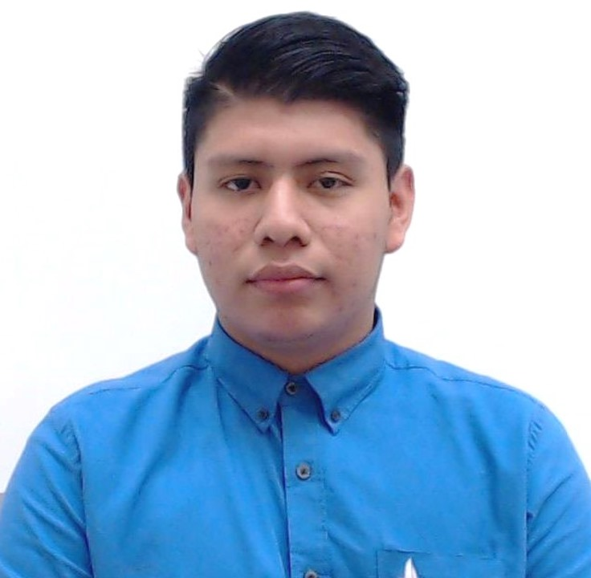

Biografía
Nombre completo: Erick Alexander Bernal Acosta
Fecha de nacimiento: 1 de mayo de 2005
Lugar de nacimiento: San Salvador Centro, El Salvador
Residencia actual: Antiguo Cuscatlán, La Libertad Este, El Salvador
Resumen:Erick Bernal es un estudiante destacado de Ingeniería de Software y Negocios Digitales en la Escuela Superior de Economía y Negocios. Desde el inicio de su carrera, ha mostrado un fuerte interés en combinar sus habilidades técnicas con estrategias de negocio, participando activamente en proyectos y actividades extracurriculares que le permiten aplicar y expandir sus conocimientos.
Educación
Ingeniería de Software y Negocios Digitales
Institución: Escuela Superior de Economía y Negocios
Año de inicio: Enero de 2023
Año de finalización: Noviembre de 2027
Descripción: En la Escuela Superior de Economía y Negocios, Erick está adquiriendo una sólida formación en áreas clave como la programación y desarrollo de software, que incluye programación orientada a objetos, desarrollo web y móvil, y arquitectura de software. Además, está aprendiendo sobre gestión de proyectos, abordando la gestión de proyectos informáticos, metodologías ágiles y pruebas de software. Su formación en negocios digitales se enfoca en el análisis y visualización de datos, transformación digital y estrategias de marketing digital. También está desarrollando habilidades en liderazgo y comunicación, esenciales para su crecimiento profesional, que abarcan liderazgo emprendedor y comunicación efectiva. La combinación de estos conocimientos le proporciona a Erick una base integral para enfrentar los retos en el campo de la tecnología y los negocios digitales.
Formación Complementaria
Diplomado en Estrategia Digital Efectiva
Institución: Escuela de Comunicaciones RSM
Año: 2023
Este diplomado le ha permitido a Erick profundizar en estrategias digitales y su aplicación en el mundo empresarial.
Curso de Marketing Digital y Posicionamiento SEO
Institución: Benowu, Madrid, España
Año: Primer semestre de 2022
En este curso, Erick adquirió conocimientos esenciales sobre marketing digital y SEO, fundamentales para el éxito en el entorno digital.
Gestión Empresarial
Institución: Universidad Dr. José Matías Delgado
Período: Febrero 2018 - Noviembre 2021
Esta formación le proporcionó a Erick una base sólida en gestión empresarial, preparándolo para liderar y gestionar proyectos con eficacia.
Logros y Reconocimientos
- Reconocimiento como Alumno Integral
- Reconocimiento por Excelencia Académica
- Reconocimiento por Excelencia
- Reconocimiento por Liderazgo
- Reconocimiento por Espíritu de Servicio
- Reconocimiento por Perseverancia